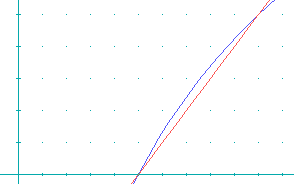

| Autor: | Wojciech Muła |
|---|---|
| Dodany: | 10.02.2002 |
| Aktualizacja: | 14.12.2003 |
Wartość liczby zmiennoprzecinkowej jest liczona wg wzoru:
x = − 1S ⋅ (1 + mantissa) ⋅ 2exponent + bias
Część całkowita log2(x) z tej liczby to dokładnie exponent − bias.
; eax - liczba o pojedynczej precyzji (float) and eax, 0x7fffffff ; zerowanie bitu znaku shr eax, 23 ; |0000 0000|0000 0000|0000 0000|exp+bias | sub al, 127 ; |0000 0000|0000 0000|0000 0000|exponent |
To powinno wystarczyć do większości zastosowań i jak widać kod jest bardzo prosty.
Znormalizowana mantysa należy do przedziału [1..2) (dokładnie [1..8388607/8388608)). Poniżej przedstawiono wykresy funkcji x − 1 (kolor czerwony) i log2(x) (kolor niebieski), dla xin[1..2).
Jak widać w tym zakresie funkcja log2(x) jest prawie liniowa, można więc aproksymować ją wartością mantissa. Ze wzoru można obliczyć wartość 1.0 + mantissa, gdy zostanie wyzerowany wykładnik:
; eax - liczba o pojedynczej precyzji (float) bias equ 127 and eax, 0x7fffff ; wyzeruj wykładnik i bit znaku or eax, (0+bias) << 23 ; ustaw nowy wykładnik (0x3f800000)
Maksymalna różnica (błąd bezwzględny) pomiędzy log2(x) − (x − 1) w przedziale [1, 2] to mniej więcej 0.086. Błąd bezwzględny można zmniejszyć o połowę, gdy użyta zostanie prosta o równaniu x − 0.957.
segment .data temp dd 0 ; bufor dla operacji FPU p dd -128.0 + 0.043 ; poprawka segment .text ; eax - liczba o pojedynczej precyzji (float) and eax, 0x7fffff ; wyzeruj wykładnik i bit znaku mov ebx, eax shr eax, 23 ; sub al, 127 ; eax = exponent and ebx, 0x7fffff ; or ebx, 0x3f8000 ; ebx = 1.0+mantissa mov [temp], eax fistp [temp] ; st0 = exponent mov [temp], ebx fadd [temp] ; st0 += 1.0+mantissa fadd [p] ; st0 += p fstp [temp] ; temp = st0